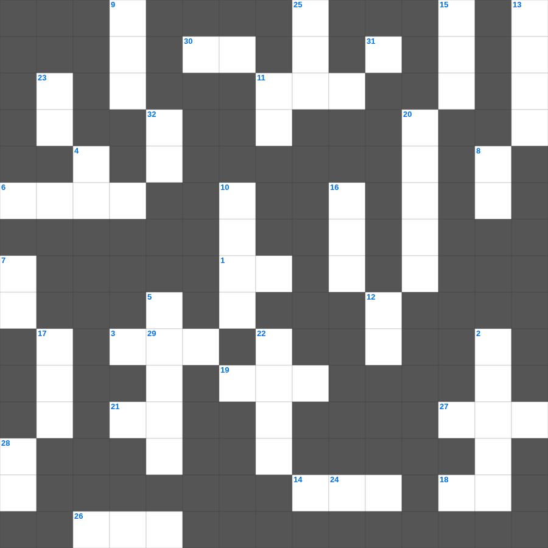

누가복음 마스터 100 (2/2)
📌 서비스 정의
십자가로세로는 교회 주보와 주일학교에서 사용할 수 있는 성경 기반 가로세로 퍼즐 서비스입니다. 성경 인물, 사건, 핵심 구절을 바탕으로 제작되었습니다. 온라인 풀이 및 인쇄 기능을 제공합니다.
📖 누가복음란?
누가복음은 의사 출신 저자 누가가 예수님을 모든 인류, 특히 소외된 자들을 위한 구원자로 그려낸 복음서로, 자세한 역사적 정황과 비유들이 풍부합니다.
📚 누가복음의 주요 사건·주제
예수님의 탄생 이야기(목자들과 천사) · 선한 사마리아인 비유 · 탕자(잃은 아들) 비유 · 예수님의 십자가와 부활 · 엠마오로 가는 길의 만남
무료로 즐기는 누가복음 누가복음 주일학교 퀴즈! 35개의 힌트로 구성된 가로세로 낱말 퍼즐입니다. PC와 모바일 모두 지원되며, 정답을 바로 확인할 수 있어 혼자서도 쉽게 풀 수 있습니다.

📝 가로 힌트
1. 그들의 입을 막을 것이라 이런 자들이 더러운 이득을 취하려고 마땅하지 아니한 것을 가르쳐 이것들을 온통 무너뜨리는도다
3. 그는 멸시를 받아 사람들에게 버림받았으며 이것을 많이 겪었으며 질고를 아는 자라
6. 에스라 전체의 주제 중 하나
11. 아달랴의 칼날을 피해 살아남아 7세에 왕이 된 자
14. 산발랏과 함께 비웃었던 암몬 사람
18. 무릇 마음이 가난하고 심령에 이것하며 내 말을 듣고 떠는 자 그 사람은 내가 돌보려니와
19. 성전에 드려진 금 잔 20개의 무게
21. 나는 그들의 하나님이 되고 그들은 내 이것이 될 것이라
26. 모세의 아내 이름
27. 내가 잘지라도 마음은 깨었는데 나의 사랑하는 자의 이것이 들리는구나
29. 예수님이 십자가에서 돌아가신 사건
30. 믿음 소망 사랑 중 제일은 이것
📝 세로 힌트
1. 독이 든 국에 엘리사가 이것을 던져 해독함
2. 계시록의 일곱 교회 중 첫 번째 교회
4. 스랍들이 모시고 섰는데 각기 여섯 이것이 있어
5. 아사 왕이 평안할 때 세운 것
7. 네 눈이 나를 놀라게 하니 돌이켜 나를 이것 말라
8. 느헤미야가 방비할 때 백성들을 세운 기준 '그들의 이것을 따라'
9. 엘리야를 하늘로 올리실 때 사용된 도구 '불말과 이것'
10. 이삭의 아내, 야곱의 어머니
11. 요한계시록을 기록한 사도
11. 예수님이 사랑하신 제자, 사랑의 사도
12. 인자야 너는 예언하여 이스라엘의 이것들에게 이르기를... 너희가 양 떼를 먹이는 것이 마땅하지 아니하냐
13. 네 입술은 좋은 포도주 같을 것이니라 이 포도주는 내 사랑하는 자를 위하여 이것하게 흘러내려서
15. 애굽에 내린 첫 번째 재앙
16. 제4계명 '이날을 기억하여 거룩하게 지키라'
17. 키가 작아 뽕나무에 올라간 세리장
20. 에스겔서의 마지막 단어이자 성읍의 이름
22. 입다 사사의 무남독녀(사건의 주인공)
23. 하늘의 궁창을 이것이라 부르심
24. 하나님의 규례를 지키면 주시는 복 '때를 따라 이것을 주리니'
25. 북이스라엘의 마지막 왕 이름
🧩 이 퍼즐에서 배우는 내용
이 퍼즐은 누가복음 마스터 100 (2/2)의 핵심 단어와 개념을 자연스럽게 복습할 수 있도록 구성되었습니다. 주일학교 수업이나 개인 성경공부에서 학습 내용을 점검하는 용도로 바로 활용할 수 있습니다.
🧑🏫 교회 교육 자료 활용
이 퍼즐은 주일학교 교재 추천 자료로 활용할 수 있고, 주일학교 주보에 넣기 좋은 분량으로 구성되어 있습니다. 수업용 주일학교 교안에 활동지로 붙이거나, 예배 후 복습용 주일학교 공과교재로 바로 사용할 수 있습니다.
🏷️ 키워드
누가복음 주일학교 퀴즈, 누가복음, 십자가로세로, 성경퀴즈, 말씀퀴즈, 가로세로퍼즐, 주일학교 교재 추천, 주일학교 주보, 주일학교 교안, 주일학교 공과교재